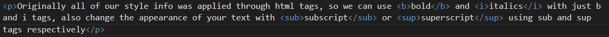
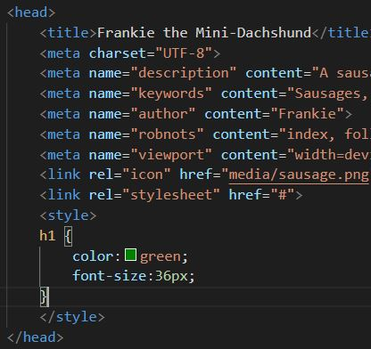

I've used a 'hr' tag above to create a horizontal line, used to break up content. However, this text is within 'p' tags, for paragraph. We don't have numbered paragraphs like headings, but we will learn how to individually identify our different p's in order to apply styles to them.
Originally all of our style info was applied through html tags, so we can use bold and italics with just 'b' and 'i' tags, also change the appearance of your text with subscript or superscript using 'sub' and 'sup' tags respectively
It looks like this:
We can use many other html tags to structure our content; Use 'ul' to create an unordered list i.e. bulllet points, or 'ol' for an ordered list.
Here's the code:

It is also common to use html tables to lay out the elements of your page, in this example some images added with the 'img' tag, which also requires a 'src' and 'alt' parameters. However, this is not the best option for images, we'll see further down a better way.
|
The last html tag you should know is 'div', this is doesn't show anything in the browser, but it is used to break your document into sections which can be handled or styled differently. The below CSS section is contained within 'div' tags, so I can manipulate it individually with style rules
To begin changing the look of the website with CSS we can add 'style' attributes directly to the html tags, known as Inline CSS; You can add your style to the head section of the html doc, known as Internal CSS; Or you can create a separate CSS file, known as External CSS. There are many style attributes which can be defined, including: color, background-color, alignment, font, borders, and many more...
When using Internal or External CSS instead of adding our style rules as attributes to our html tags, we instead right CSS rules which have their own syntax. There is a selector followed by declarations as Key Value Pairs in curley braces for example:
h1 {color:green; font-size:16px;}
When added between the head tags it looks like this:
You might have spotted a problem with the CSS rules. What if we wanted to apply rules to individual elements, rather than all h1 elements, or all divs. To do this we assign a CSS class to our html tags, and then refer to those tags in our CSS rules declared in the head block. These images below show the div tags with classes, the CSS rules with class selectors, and the different output in the browser: